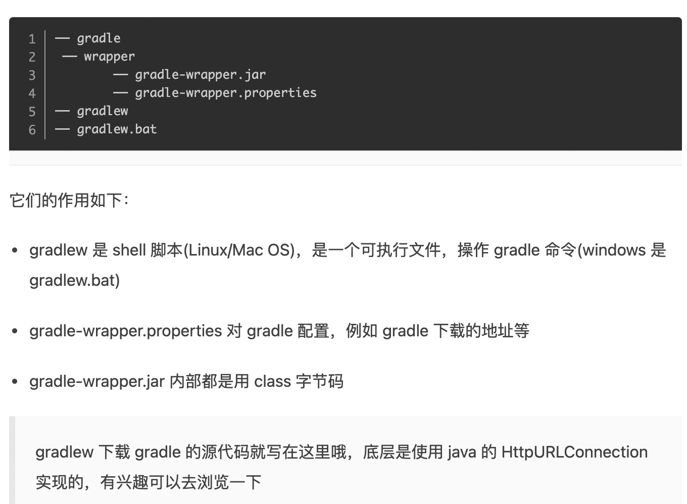
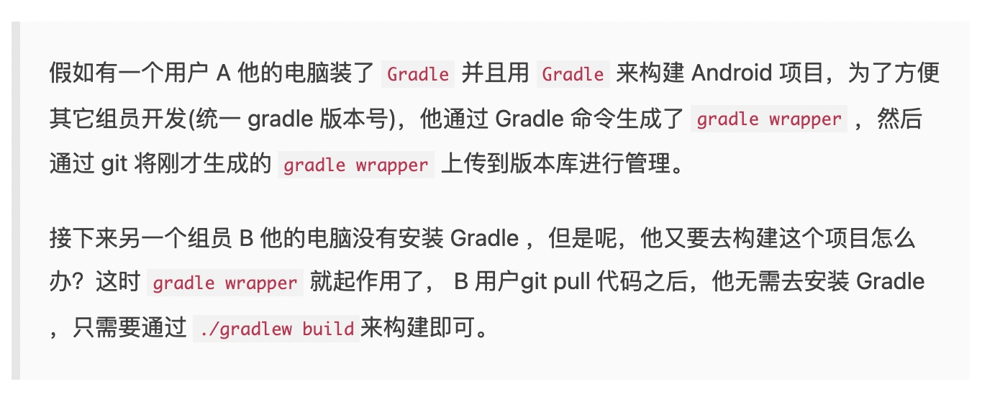
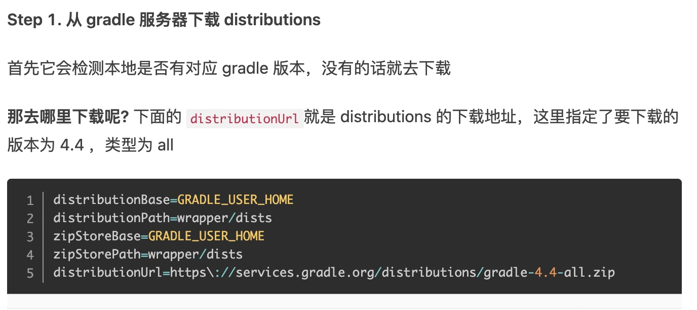

gradlew的作用
为了使各个开发者的项目gradle版本一致，所以用gradle wrapper包了一层



会先去 ~/.gradle/wrapper/dists/ 看有没有该版本的gradle
GRADLE_USER_HOME 这个是在可配置，默认是~/.gradle 自己在bash_profile等地方配一下也行
GRADLE_USER_HOME=~/Document/.gradle
export GRADLE_USER_HOME
除此以外，电脑也可以安装一个低版本gradle，我理解这个是作为兜底用的，这样
gradle -v 找的就是这个低版本gradle
而在项目目录下运行./wgradlew -v 找的是项目里面写的版本gradle
Ant、Maven、Gradle的区别
- Apache Ant 使用xml进行构建脚本组织。最大的问题是无法进行依赖管理，只能直接引用本地jar包依赖
- Maven带依赖管理，但自定义构建流程复杂。
gradle下载的二三方包保存在哪里？
答：~/.gradle/cache/dodules-2/files-2.1/包名/库名/版本号/hash字符串/
常见的构建命令
./gradlew build 会同时打debug和release，比较耗时
./gradlew assembleDebug assembleRelease 打debug/release包
./gradlew clean
./gradle dependencies 列出依赖
调试选项
-?，-h，--help # 帮助信息
-v，--version # 版本信息
-s, --stacktrace # 打印出异常堆栈跟踪信息；
-S, --full-stacktrace # 比上面更完整的信息；
性能相关
--build-cache # 复用缓存
--no-build-cache # 不复用缓存，默认
--max-workers # 最大处理器数量
--parallel # 并行生成项目
--no-parallel # 不并行生成项目
--priority # Gradle启动的进程优先级
--profile # 生成性能报告
链接：https://juejin.cn/post/6950643579643494431